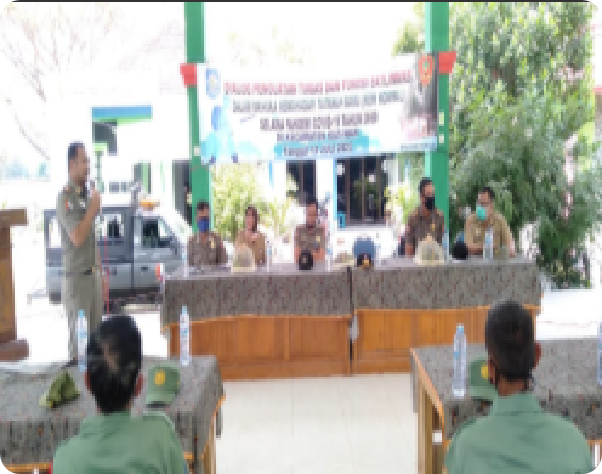

BERITA
KABUPATEN BOJONEGORO
-

Satpol PP Gelar Diskusi bareng Satlintas Soal Normal Baru Covid-19
10-08-2020Satuan Polisi Pamong Praja (Satpol PP) Menggelar diskusi Bersama para petugas Satuan Perlindungan Masyarakat (Satlinmas) di Kec...READ MORE -

Dinsos Bojonegoro Gelar Pelatihan Sablon Bagi Anak Jalanan
10-08-2020Dinas Sosial (Dinsos) Bojonegoro menggelar pembinaan dan pemberian motivasi bagi anak jalanan, Selasa (14/07/2020). Program ini mer...READ MORE -

Bulan ini Penyaluran BLT Tahap III Ditarget Tuntas
10-08-2020Dinas pemberdayaan Masyarakat dan Desa (DPMD) Bojonegoro meminta kepada desa-desa untuk segera menyelesaikan administrasi agar dapat…READ MORE -

Hari Ini Ada Penambahan Kasus Positif Sebanyak 14 Orang, Pasien Sembuh 2 Orang
10-08-2020Dinas pemberdayaan Masyarakat dan Desa (DPMD) Bojonegoro meminta kepada desa-desa untuk segera menyelesaikan administrasi agar dapat…READ MORE
Copyright 2020 | PEMKAB BOJONEGORO
Statistik:
Hari ini : 2.110 Bulan ini : 54.083 Tahun ini : 567.891
Hari ini : 2.110 Bulan ini : 54.083 Tahun ini : 567.891